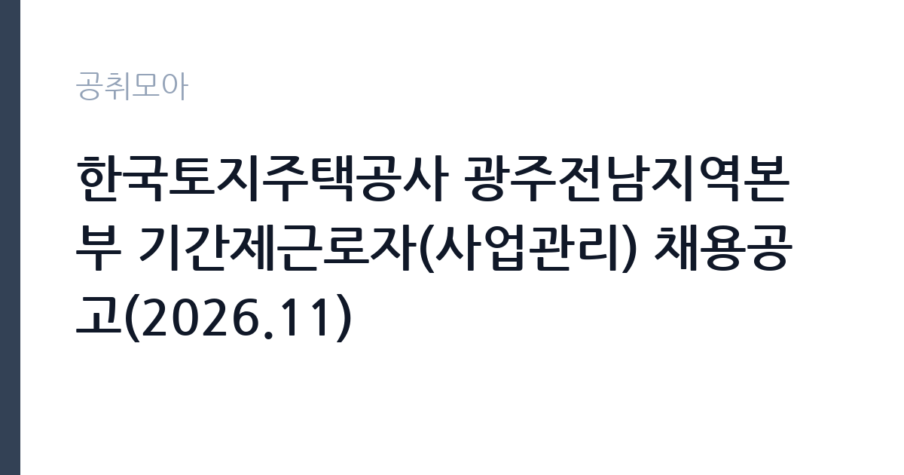

[공공기관] 한국토지주택공사 광주전남지역본부 기간제근로자(사업관리) 채용공고(2026.11)
한국토지주택공사 · 전남광주 · 마감 2026-11-16 (D-15) · 출처 잡알리오

한눈에 보는 모집 조건
| 기관 | 한국토지주택공사 |
|---|---|
| 공고명 | 한국토지주택공사 광주전남지역본부 기간제근로자(사업관리) 채용공고(2026.11) |
| 고용형태 | 기간제 |
| 근무지 | 전남광주 |
| 게시일 | 2026-11-02 |
| 마감일 | 2026-11-16 (D-15) |
지원자격, 이렇게 읽으세요
- 공공기관 채용공시
- 세부 조건은 원문 공고문 확인
응시자격은 학력과 경력 제한이 없고, LH 인사규정 제9조와 기간제근로자 운영지침 제15조의 채용금지 사유에 해당하지 않으면 지원할 수 있습니다. 여기서 놓치기 쉬운 조항이 두 가지 있습니다. 하나는 기간제근로자 운영지침상 공사에서 근로자로 퇴직한 뒤 1년이 지나지 않은 사람은 채용할 수 없다는 점입니다. 파견·용역 근로자로서 기간제근로자와 같은 직무를 수행한 경우도 포함됩니다. 다른 하나는 연령 기준입니다. 만 18세 미만과 만 60세 이상은 채용할 수 없습니다. 자격 우대는 사회복지사 1급, 주택관리사, 주거복지사, 공인중개사 가운데 하나를 가진 경우 서류전형 만점의 5퍼센트, 사회복지사 2급은 3퍼센트 가점이 붙습니다. 여러 자격을 가졌어도 가장 유리한 1개만 인정됩니다.
이 공고의 포인트
이 공고의 포인트는 전형 배점이 공개되어 있다는 점입니다. 서류전형은 자기소개 30점, 지원동기 30점, 경험 및 경력 40점에 가점 최대 15점이 붙습니다. 경험 항목 비중이 40점으로 가장 크기 때문에, 관련 업무 경험을 구체적으로 정리하는 것이 합격을 가릅니다. 면접은 의사소통 30점, 문제해결 40점, 조직적응력 30점으로 문제해결 비중이 가장 높습니다. 두 번째는 예비합격자 제도입니다. 최종 1명과 별도로 예비합격자 3명을 순위까지 확정해 둡니다. 세 번째는 과락 기준입니다. 면접 점수가 70점 미만이면 불합격 처리되므로, 인원이 적은 공고라도 면접 준비를 소홀히 하면 결과가 뒤집힙니다.
전형은 어떻게 진행되나
1차 서류전형은 자격요건 충족자를 대상으로 자기소개 30점, 지원동기 30점, 경험 및 경력 40점을 평가하고 가점을 더해 고득점자 순으로 5명을 선발합니다. 동점자는 전원 합격입니다. 합격자 발표와 면접 안내는 11월 19일 목요일 오후 2시 이후 개별 통보하며, 당일 오후 5시까지 문자를 받지 못하면 통신 장애일 수 있으므로 담당자에게 유선 확인해야 합니다. 2차 면접은 의사소통 30점, 문제해결 40점, 조직적응력 30점으로 100점을 구성하고 가점을 더합니다. 70점 미만은 과락입니다. 동점자는 취업지원대상자, 장애인, 서류전형 우수자 순으로 순위를 정합니다. 최종합격자는 11월 26일 목요일 오후 2시 이후 개별 통보합니다.
원문에서 확인한 전형 방식
[공통] o 한국토지주택공사 「인사규정」 제9조(채용금지) 및 「기간제근로자 운영지침」 제15조(채용금지)에 해당되지 아니한 자 * 자세한 사항은 첨부파일의 채용공고문 참조
이런 분께 추천해요
- 주거복지나 사업관리 실무를 해본 분. 서류전형에서 경험 및 경력이 40점으로 가장 큰 비중을 차지합니다.
- 사회복지사 1급이나 주거복지사, 주택관리사 자격을 가진 분. 서류전형 만점의 5퍼센트 가점이 붙습니다.
- 광주·전남 지역에서 근무할 수 있는 분. 근무지는 LH 광주전남지역본부 주거복지사업1팀입니다.
지원 전 체크리스트
- LH에서 근로자로 퇴직한 뒤 1년이 지났는가. 기간제근로자 운영지침상 1년 미경과자는 채용할 수 없습니다.
- 만 60세 미만인가. 만 18세 미만과 만 60세 이상은 채용 대상에서 제외됩니다.
- 자격증 사본을 준비했는가. 가점은 서류전형 단계에만 적용되고, 증명서를 내지 않으면 인정되지 않습니다.
- 면접 대비를 했는가. 면접 70점 미만은 과락이며 문제해결 항목이 40점으로 가장 큽니다.
모집 일정과 제출 타이밍
접수는 2026년 11월 2일 월요일부터 11월 16일 월요일까지입니다. LH 채용 홈페이지를 통한 온라인 접수로 진행되며, 서류 합격자는 11월 19일 목요일 오후 2시 이후 개별 통보됩니다. 면접은 서류 합격자에게 별도로 안내되고, 최종합격자는 11월 26일 목요일 오후 2시 이후 통보됩니다. 두 번 모두 문자 미수신 시 담당자에게 전화로 확인해야 하며, 확인하지 않은 부분은 공사가 책임지지 않는다고 공고문이 명시하고 있습니다. 문의는 LH 광주전남지역본부 채용 담당자에게 하면 됩니다.
직무 이해하기: 공공기관
LH는 국토교통부 산하 공기업으로 공공주택 공급과 주거복지, 도시·토지 개발을 담당합니다. 광주전남지역본부 주거복지사업1팀은 임대주택 입주자 관리와 주거취약계층 지원, 주거급여 관련 실무를 맡습니다. 사업관리 직무는 공고의 접수부터 계약, 정산까지 흐름을 관리하는 일입니다. 구체적으로는 사업 일정과 예산을 확인하고, 관련 업체와 계약 서류를 검토하며, 현장 점검 결과를 정리해 보고하는 업무가 중심입니다. 대체채용이므로 원 담당자의 업무를 인수인계받아 바로 수행해야 하고, 계약 기간은 휴직자의 복귀 시점에 맞춰 정해집니다.
자기소개서 작성 팁
서류전형에서 자기소개와 지원동기가 각 30점, 경험 및 경력이 40점입니다. 세 항목을 모두 채우려 하지 말고 경험 항목에 분량을 집중하십시오. 첫 문단은 지원동기입니다. LH의 주거복지 사업 가운데 본인이 왜 사업관리 직무를 선택했는지 한두 문장으로 밝히십시오. 두 번째 문단이 승부처입니다. 이전 직장에서 계약서 검토, 예산 집행, 현장 점검 가운데 무엇을 맡았는지 구체적으로 쓰고, 처리 건수나 기간 같은 숫자를 붙이십시오. 세 번째 문단은 자기소개로, 조직 내에서 갈등을 조정한 경험이나 협업 사례를 짧게 넣으면 조직적응력 평가와 연결됩니다. 마지막으로 대체채용이라는 점을 이해하고 있다는 표현을 넣되, 짧게 끝내십시오.
면접 준비 포인트
면접은 의사소통 30점, 문제해결 40점, 조직적응력 30점으로 구성됩니다. 문제해결 비중이 가장 크므로 상황형 질문이 나올 가능성이 높습니다. 예를 들어 계약 일정이 지연될 때 어떻게 대응할지, 민원인이 반복해서 찾아올 때 어떻게 처리할지를 묻는 식입니다. 답변은 상황 인식, 판단 기준, 조치, 결과 확인 순으로 정리하십시오. 조직적응력은 상사·동료와의 협업 사례로 답합니다. 의사소통 항목은 질문의 핵심을 정확히 짚어 답하는지로 평가되므로, 답변 전에 한 번 되물어 확인해도 감점되지 않습니다. 면접 70점 미만은 과락이므로 준비를 생략하지 마십시오.
급여·근무조건 읽는 법
공고문에는 이 직위의 임금이 금액으로 명시되어 있지 않아 원문 공고문과 채용 담당자 확인이 필요합니다. 기관 전체 수준은 알리오 2025년 결산 공시로 가늠할 수 있습니다. 한국토지주택공사의 일반정규직 1인당 평균보수액은 8,408만원, 신입사원 초임은 4,118만원입니다. 다만 이번 채용은 기간제근로자 대체채용이라 위 정규직 공시값이 그대로 적용되지 않습니다. 기간제 보수는 공사의 기간제 임금 기준과 계약 기간에 따라 정해지므로, 월 급여와 계약 개월 수, 수당 포함 여부를 함께 확인해야 합니다. 평균보수액은 기본급에 고정수당과 성과상여금, 급여성 복리후생비를 합산한 값이라 정규직의 월 실수령액과도 차이가 있습니다.
자주 묻는 질문
- 경력이 없어도 지원할 수 있나요?
학력과 경력 제한은 없습니다. 다만 서류전형에서 경험 및 경력 항목이 40점으로 가장 큰 비중을 차지하므로, 관련 활동이나 교육 이수 경험을 구체적으로 정리하는 편이 유리합니다. - 자격증 가점은 어떻게 계산되나요?
사회복지사 1급, 주택관리사, 주거복지사, 공인중개사는 서류전형 만점의 5퍼센트, 사회복지사 2급은 3퍼센트가 가산됩니다. 자격증이 여러 개여도 가장 유리한 1개만 적용됩니다. - 계약 기간은 어떻게 되나요?
육아휴직 등 휴직자 대체 채용입니다. 구체적 계약 기간은 원문 공고문과 채용 담당자 안내에서 확인해야 하며, 휴직자의 복직 시점에 따라 달라질 수 있습니다.
함께 보면 좋은 공고
[공공기관] 대한적십자사 인천사할린동포복지회관 직원(요양보호사) 채용 공고 — 마감 2026-11-17[공공기관] 건설분야 기간제 근로자 채용공고 [HVDC건설본부] — 마감 2026-11-16[공공기관] 대한적십자사 인천사할린동포복지회관 직원(요양보호사) 채용 공고 — 마감 2026-11-17출처: 잡알리오 공개정보를 바탕으로 공취모아가 정리한 안내글입니다. 모집 조건·일정은 변경될 수 있으니 지원 전 반드시 원문 공고문을 확인하세요. 본 글은 정보 제공용이며 합격을 보장하지 않습니다.